#Removing previous datasets in memory
rm(list = ls())
#Loading the relevant libraries
library(ggplot2)
library(gridExtra)
library(dplyr)
library(purrr)
library(sf)
library(rnaturalearth)
library(rnaturalearthdata)
library(ggrepel)Lab 8: Statistics
T-Tests, Choropleth Maps, and Correlations
1 Intro
In this lab, we learn about T-tests and Correlations in pratice. We also learn about mapping.
We learned from the lecture that Z-tests evaluate if there are differences between two groups, when standard deviation or variance is known. The sample size typically should be larger than 30. In most cases however, we will not know the population SD, which is why we will most often use t-tests. To illustrate how t-tests work, let us go back to the sample of Latin American countries and compare them to the world.
2 Loading the Data
Let us go back to the old Life Expectancy dataset. If you don’t have it anymore, you can download Life Expectancy and urbanization from the following links:
Let us re-examine the distribution of our life expectancy dataset by making a histogram. We need to first load the data:
#Setting path
setwd("/Users/bgpopescu/Dropbox/john_cabot/teaching/stats/lab8/")
#Step1: Loading the data
life_expectancy <- read.csv(file = './life-expectancy.csv')
urbanization <- read.csv(file = './share-of-population-urban.csv')3 Cleaning the Data
In the next few line we average life expectancy over country (the original dataset is a panel - with countries and years). This means that we are getting rid of the time component.
#Step1: Calculating the mean
life_expectancy2<-life_expectancy%>%
group_by(Code, Entity)%>%
summarize(life_expectancy=mean(Life.expectancy.at.birth..historical.))
#Step2: Cleaning the Data
weird_labels <- c("OWID_KOS", "OWID_WRL", "")
clean_countries<-subset(life_expectancy2, !(Code %in% weird_labels))Let us look at our data. We have learned so far to use head.
head(clean_countries, n=5)# A tibble: 5 × 3
# Groups: Code [5]
Code Entity life_expectancy
<chr> <chr> <dbl>
1 ABW Aruba 70.3
2 AFG Afghanistan 45.4
3 AGO Angola 45.1
4 AIA Anguilla 69.4
5 ALB Albania 68.3We can also use potentially a more powerful function to look at our data. This is called glimpse.
glimpse(clean_countries)Rows: 235
Columns: 3
Groups: Code [235]
$ Code <chr> "ABW", "AFG", "AGO", "AIA", "ALB", "AND", "ARE", "ARG"…
$ Entity <chr> "Aruba", "Afghanistan", "Angola", "Anguilla", "Albania…
$ life_expectancy <dbl> 70.25972, 45.38333, 45.08466, 69.44028, 68.28611, 77.0…As you can see, this tells us exactly how many observations (235), how many columns/variables (3) we have, the first values that these variables take, and the type of variables that we are dealing with: in this case, character and integers. We should consider using glimpse from now on to understand our data better.
4 Mapping the Data
We will now try to map the data. The package rnaturalearth provides the geographic data for all countries in the world. Use ne_countries to pull country data and choose the scale (rnaturalearthhires is necessary for scale = “large”).
world <- ne_countries(scale = "medium", returnclass = "sf")We are now working with a different object. The data that we just cleaned - clean_countries, falls under three different categories of objects: data frame, grouped data frame, a tibble, and a dataframe.
class(clean_countries)[1] "grouped_df" "tbl_df" "tbl" "data.frame"Tibble is the central data structure for the set of packages known as the tidyverse, which include dplyr, ggplot2, tidyr, and readr. The general ethos is that tibbles are lazy and surly: they do less and complain more than base data.frames. This forces problems to be tackled earlier and more explicitly, typically leading to code that is more expressive and robust.
If we look at the class for our new object world, it is a different class.
class(world)[1] "sf" "data.frame"At its most basic, an sf object is a collection of simple features that includes attributes and geometries in the form of a data frame. In other words, it is a data frame (or tibble) with rows of features, columns of attributes, and a special geometry column that contains the spatial aspects of the features.
We can use this format to make maps.
ggplot() +
geom_sf() +
geom_sf(data = world)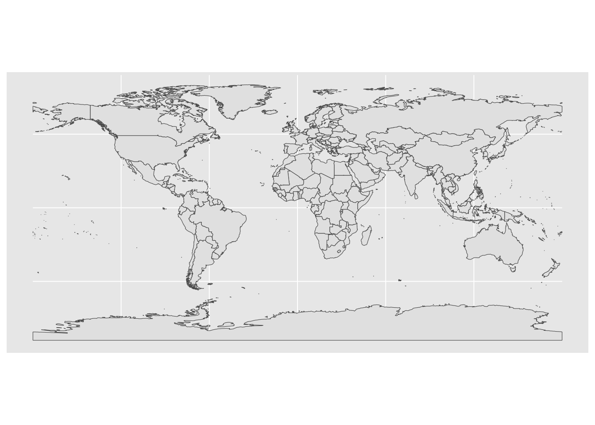
But let us also look more closely at the attribute table of this spatial dataframe.
glimpse(world, n = 3)Rows: 241
Columns: 64
$ scalerank <int> 3, 1, 1, 1, 1, 3, 3, 1, 1, 1, 3, 1, 5, 3, 1, 1, 1, 1, 1, 1,…
$ featurecla <chr> "Admin-0 country", "Admin-0 country", "Admin-0 country", "A…
$ labelrank <dbl> 5, 3, 3, 6, 6, 6, 6, 4, 2, 6, 4, 4, 5, 6, 6, 2, 4, 5, 6, 2,…
$ sovereignt <chr> "Netherlands", "Afghanistan", "Angola", "United Kingdom", "…
$ sov_a3 <chr> "NL1", "AFG", "AGO", "GB1", "ALB", "FI1", "AND", "ARE", "AR…
$ adm0_dif <dbl> 1, 0, 0, 1, 0, 1, 0, 0, 0, 0, 1, 0, 1, 1, 0, 1, 0, 0, 0, 0,…
$ level <dbl> 2, 2, 2, 2, 2, 2, 2, 2, 2, 2, 2, 2, 2, 2, 2, 2, 2, 2, 2, 2,…
$ type <chr> "Country", "Sovereign country", "Sovereign country", "Depen…
$ admin <chr> "Aruba", "Afghanistan", "Angola", "Anguilla", "Albania", "A…
$ adm0_a3 <chr> "ABW", "AFG", "AGO", "AIA", "ALB", "ALD", "AND", "ARE", "AR…
$ geou_dif <dbl> 0, 0, 0, 0, 0, 0, 0, 0, 0, 0, 0, 0, 0, 0, 0, 0, 0, 0, 0, 0,…
$ geounit <chr> "Aruba", "Afghanistan", "Angola", "Anguilla", "Albania", "A…
$ gu_a3 <chr> "ABW", "AFG", "AGO", "AIA", "ALB", "ALD", "AND", "ARE", "AR…
$ su_dif <dbl> 0, 0, 0, 0, 0, 0, 0, 0, 0, 0, 0, 0, 0, 0, 0, 0, 0, 0, 0, 0,…
$ subunit <chr> "Aruba", "Afghanistan", "Angola", "Anguilla", "Albania", "A…
$ su_a3 <chr> "ABW", "AFG", "AGO", "AIA", "ALB", "ALD", "AND", "ARE", "AR…
$ brk_diff <dbl> 0, 0, 0, 0, 0, 0, 0, 0, 0, 0, 0, 0, 0, 0, 0, 0, 0, 0, 0, 0,…
$ name <chr> "Aruba", "Afghanistan", "Angola", "Anguilla", "Albania", "A…
$ name_long <chr> "Aruba", "Afghanistan", "Angola", "Anguilla", "Albania", "A…
$ brk_a3 <chr> "ABW", "AFG", "AGO", "AIA", "ALB", "ALD", "AND", "ARE", "AR…
$ brk_name <chr> "Aruba", "Afghanistan", "Angola", "Anguilla", "Albania", "A…
$ brk_group <chr> NA, NA, NA, NA, NA, NA, NA, NA, NA, NA, NA, NA, NA, NA, NA,…
$ abbrev <chr> "Aruba", "Afg.", "Ang.", "Ang.", "Alb.", "Aland", "And.", "…
$ postal <chr> "AW", "AF", "AO", "AI", "AL", "AI", "AND", "AE", "AR", "ARM…
$ formal_en <chr> "Aruba", "Islamic State of Afghanistan", "People's Republic…
$ formal_fr <chr> NA, NA, NA, NA, NA, NA, NA, NA, NA, NA, NA, NA, NA, NA, NA,…
$ note_adm0 <chr> "Neth.", NA, NA, "U.K.", NA, "Fin.", NA, NA, NA, NA, "U.S.A…
$ note_brk <chr> NA, NA, NA, NA, NA, NA, NA, NA, NA, NA, NA, "Multiple claim…
$ name_sort <chr> "Aruba", "Afghanistan", "Angola", "Anguilla", "Albania", "A…
$ name_alt <chr> NA, NA, NA, NA, NA, NA, NA, NA, NA, NA, NA, NA, NA, NA, NA,…
$ mapcolor7 <dbl> 4, 5, 3, 6, 1, 4, 1, 2, 3, 3, 4, 4, 1, 7, 2, 1, 3, 1, 2, 3,…
$ mapcolor8 <dbl> 2, 6, 2, 6, 4, 1, 4, 1, 1, 1, 5, 5, 2, 5, 2, 2, 1, 6, 2, 2,…
$ mapcolor9 <dbl> 2, 8, 6, 6, 1, 4, 1, 3, 3, 2, 1, 1, 2, 9, 5, 2, 3, 5, 5, 1,…
$ mapcolor13 <dbl> 9, 7, 1, 3, 6, 6, 8, 3, 13, 10, 1, NA, 7, 11, 5, 7, 4, 8, 8…
$ pop_est <dbl> 103065, 28400000, 12799293, 14436, 3639453, 27153, 83888, 4…
$ gdp_md_est <dbl> 2258.0, 22270.0, 110300.0, 108.9, 21810.0, 1563.0, 3660.0, …
$ pop_year <dbl> NA, NA, NA, NA, NA, NA, NA, NA, NA, NA, NA, NA, NA, NA, NA,…
$ lastcensus <dbl> 2010, 1979, 1970, NA, 2001, NA, 1989, 2010, 2010, 2001, 201…
$ gdp_year <dbl> NA, NA, NA, NA, NA, NA, NA, NA, NA, NA, NA, NA, NA, NA, NA,…
$ economy <chr> "6. Developing region", "7. Least developed region", "7. Le…
$ income_grp <chr> "2. High income: nonOECD", "5. Low income", "3. Upper middl…
$ wikipedia <dbl> NA, NA, NA, NA, NA, NA, NA, NA, NA, NA, NA, NA, NA, NA, NA,…
$ fips_10 <chr> NA, NA, NA, NA, NA, NA, NA, NA, NA, NA, NA, NA, NA, NA, NA,…
$ iso_a2 <chr> "AW", "AF", "AO", "AI", "AL", "AX", "AD", "AE", "AR", "AM",…
$ iso_a3 <chr> "ABW", "AFG", "AGO", "AIA", "ALB", "ALA", "AND", "ARE", "AR…
$ iso_n3 <chr> "533", "004", "024", "660", "008", "248", "020", "784", "03…
$ un_a3 <chr> "533", "004", "024", "660", "008", "248", "020", "784", "03…
$ wb_a2 <chr> "AW", "AF", "AO", NA, "AL", NA, "AD", "AE", "AR", "AM", "AS…
$ wb_a3 <chr> "ABW", "AFG", "AGO", NA, "ALB", NA, "ADO", "ARE", "ARG", "A…
$ woe_id <dbl> NA, NA, NA, NA, NA, NA, NA, NA, NA, NA, NA, NA, NA, NA, NA,…
$ adm0_a3_is <chr> "ABW", "AFG", "AGO", "AIA", "ALB", "ALA", "AND", "ARE", "AR…
$ adm0_a3_us <chr> "ABW", "AFG", "AGO", "AIA", "ALB", "ALD", "AND", "ARE", "AR…
$ adm0_a3_un <dbl> NA, NA, NA, NA, NA, NA, NA, NA, NA, NA, NA, NA, NA, NA, NA,…
$ adm0_a3_wb <dbl> NA, NA, NA, NA, NA, NA, NA, NA, NA, NA, NA, NA, NA, NA, NA,…
$ continent <chr> "North America", "Asia", "Africa", "North America", "Europe…
$ region_un <chr> "Americas", "Asia", "Africa", "Americas", "Europe", "Europe…
$ subregion <chr> "Caribbean", "Southern Asia", "Middle Africa", "Caribbean",…
$ region_wb <chr> "Latin America & Caribbean", "South Asia", "Sub-Saharan Afr…
$ name_len <dbl> 5, 11, 6, 8, 7, 5, 7, 20, 9, 7, 14, 10, 23, 22, 17, 9, 7, 1…
$ long_len <dbl> 5, 11, 6, 8, 7, 13, 7, 20, 9, 7, 14, 10, 27, 35, 19, 9, 7, …
$ abbrev_len <dbl> 5, 4, 4, 4, 4, 5, 4, 6, 4, 4, 9, 4, 7, 10, 6, 4, 5, 4, 4, 5…
$ tiny <dbl> 4, NA, NA, NA, NA, 5, 5, NA, NA, NA, 3, NA, NA, 2, 4, NA, N…
$ homepart <dbl> NA, 1, 1, NA, 1, NA, 1, 1, 1, 1, NA, 1, NA, NA, 1, 1, 1, 1,…
$ geometry <MULTIPOLYGON [°]> MULTIPOLYGON (((-69.89912 1..., MULTIPOLYGON (…Our data has a lot of variables, which we don’t need. It seems that the variable adm0_a3 might be good variable to keep: we will use this variable to merge our clean data frame. It might also be helpful to keep admin, continent, sovereignt. These will will help us identify some smaller geographic units (islands) which fall under larger jurisdictions.
world2<-subset(world, select = c(admin, adm0_a3, sovereignt, continent))
glimpse(world2)Rows: 241
Columns: 5
$ admin <chr> "Aruba", "Afghanistan", "Angola", "Anguilla", "Albania", "A…
$ adm0_a3 <chr> "ABW", "AFG", "AGO", "AIA", "ALB", "ALD", "AND", "ARE", "AR…
$ sovereignt <chr> "Netherlands", "Afghanistan", "Angola", "United Kingdom", "…
$ continent <chr> "North America", "Asia", "Africa", "North America", "Europe…
$ geometry <MULTIPOLYGON [°]> MULTIPOLYGON (((-69.89912 1..., MULTIPOLYGON (…We now have a spatial dataframe with fewer variables. As mentioned, it seems that a good variable to merge on is adm0_a3. Let us look at both:
ctries_sp<-world2$adm0_a3
glimpse(ctries_sp) chr [1:241] "ABW" "AFG" "AGO" "AIA" "ALB" "ALD" "AND" "ARE" "ARG" "ARM" ...ctries_df<-clean_countries$Code
glimpse(ctries_df) chr [1:235] "ABW" "AFG" "AGO" "AIA" "ALB" "AND" "ARE" "ARG" "ARM" "ASM" ...Let us now examine whether there are differences when it comes to what is included/excluded in the two lists. We can do this with the help of the setdiff function, which indicates which elements of a vector or data frame X are not existent in a vector or data frame Y.
countries_dif<-setdiff(ctries_sp, ctries_df)
countries_dif [1] "ALD" "ATA" "ATC" "ATF" "BLM" "CYN" "HMD" "IOA" "IOT" "KAS" "KOS" "NFK"
[13] "PCN" "PSX" "SAH" "SDS" "SGS" "SOL"These are countries that are in the spatial dataframe, but not in the our dataframe. What are these countries?
world3<-subset(world2, adm0_a3 %in% countries_dif)
head(world3, n = 10)Simple feature collection with 10 features and 4 fields
Geometry type: MULTIPOLYGON
Dimension: XY
Bounding box: xmin: -180 ymin: -89.99893 xmax: 180 ymax: 60.40581
CRS: +proj=longlat +datum=WGS84 +no_defs +ellps=WGS84 +towgs84=0,0,0
admin adm0_a3 sovereignt
5 Aland ALD Finland
11 Antarctica ATA Antarctica
12 Ashmore and Cartier Islands ATC Australia
13 French Southern and Antarctic Lands ATF France
27 Saint Barthelemy BLM France
54 Northern Cyprus CYN Northern Cyprus
91 Heard Island and McDonald Islands HMD Australia
99 Indian Ocean Territories IOA Australia
100 British Indian Ocean Territory IOT United Kingdom
111 Siachen Glacier KAS Kashmir
continent geometry
5 Europe MULTIPOLYGON (((20.61133 60...
11 Antarctica MULTIPOLYGON (((-161.9938 -...
12 Oceania MULTIPOLYGON (((123.5945 -1...
13 Seven seas (open ocean) MULTIPOLYGON (((69.28242 -4...
27 North America MULTIPOLYGON (((-62.83193 1...
54 Asia MULTIPOLYGON (((34.00449 35...
91 Seven seas (open ocean) MULTIPOLYGON (((73.70742 -5...
99 Asia MULTIPOLYGON (((96.91826 -1...
100 Seven seas (open ocean) MULTIPOLYGON (((72.49199 -7...
111 Asia MULTIPOLYGON (((77.79941 35...list(world3$admin)[[1]] [1] "Aland"
[2] "Antarctica"
[3] "Ashmore and Cartier Islands"
[4] "French Southern and Antarctic Lands"
[5] "Saint Barthelemy"
[6] "Northern Cyprus"
[7] "Heard Island and McDonald Islands"
[8] "Indian Ocean Territories"
[9] "British Indian Ocean Territory"
[10] "Siachen Glacier"
[11] "Kosovo"
[12] "Norfolk Island"
[13] "Pitcairn Islands"
[14] "Palestine"
[15] "Western Sahara"
[16] "South Sudan"
[17] "South Georgia and South Sandwich Islands"
[18] "Somaliland" Let us now perform a left merge so that we can have the data that we cleaned onto the spatial dataframe.
merged<-left_join(world2, clean_countries, by = c("adm0_a3" = "Code"))
glimpse(merged, n = 4)Rows: 241
Columns: 7
$ admin <chr> "Aruba", "Afghanistan", "Angola", "Anguilla", "Albania…
$ adm0_a3 <chr> "ABW", "AFG", "AGO", "AIA", "ALB", "ALD", "AND", "ARE"…
$ sovereignt <chr> "Netherlands", "Afghanistan", "Angola", "United Kingdo…
$ continent <chr> "North America", "Asia", "Africa", "North America", "E…
$ Entity <chr> "Aruba", "Afghanistan", "Angola", "Anguilla", "Albania…
$ life_expectancy <dbl> 70.25972, 45.38333, 45.08466, 69.44028, 68.28611, NA, …
$ geometry <MULTIPOLYGON [°]> MULTIPOLYGON (((-69.89912 1..., MULTIPOLY…This looks good. Let us now make our first map.
ggplot() +
geom_sf() +
geom_sf(data = merged, aes(fill = life_expectancy))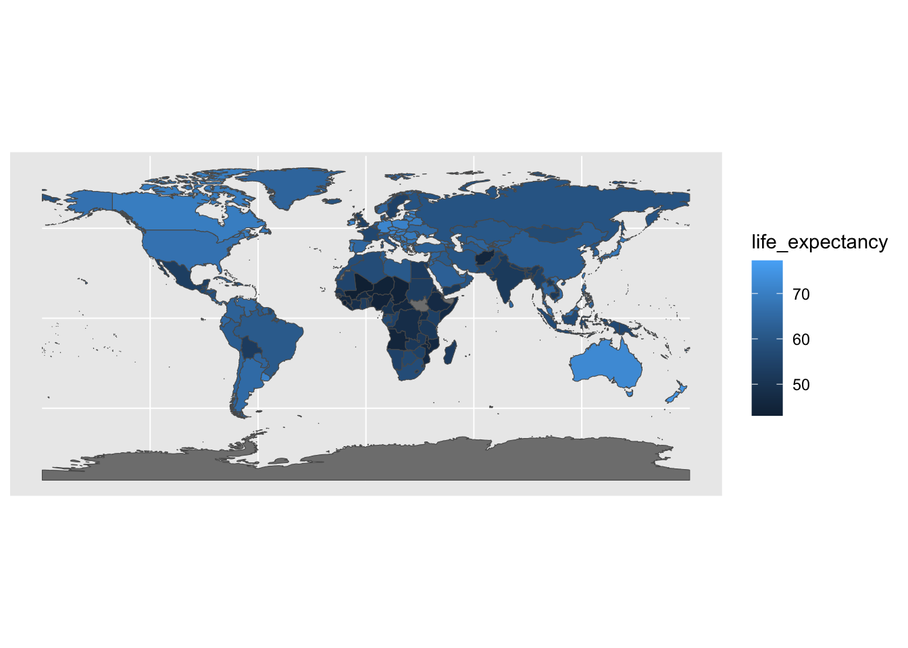
We have a just made a choropleth map, which indicates intensity of a variable. Let us now add a few embellishments to make our map nicer.
ggplot() +
geom_sf() +
geom_sf(data = merged, aes(fill = life_expectancy))+
theme_bw()+
xlab("X - Longitude") + ylab("Y - Latitude")+
scale_y_continuous(breaks=seq(-90, 90, by = 10), limits = c(-90,90))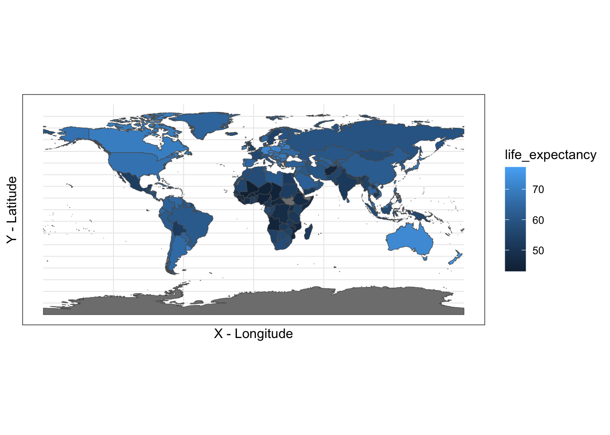
A map like this has exactly the same structure of regular ggplot graph. The difference is that X is now longitude and Y is latitude.
5 Performing a t-test
Let us now go back to our original task, that of calculating a t-test. Because we have this new variable - continent, we no longer need to manually ascribe a continent to our countries. Let us quickly see our labels for the continents.
unique(merged$continent)[1] "North America" "Asia"
[3] "Africa" "Europe"
[5] "South America" "Oceania"
[7] "Antarctica" "Seven seas (open ocean)"We can use the “South America” label. Note that this does not capture all the countries which we previously referred to as “Latin America.” For example, Mexico is not included here, as it is part of North America. This is to say that Latin America can both referred to as a geographic, but also linguistic space.
sample_latam<-subset(merged, continent=="South America")Let us quickly map South America.
ggplot() +
geom_sf() +
geom_sf(data = sample_latam, aes(fill = life_expectancy))+
theme_bw()+
xlab("X - Longitude") + ylab("Y - Latitude")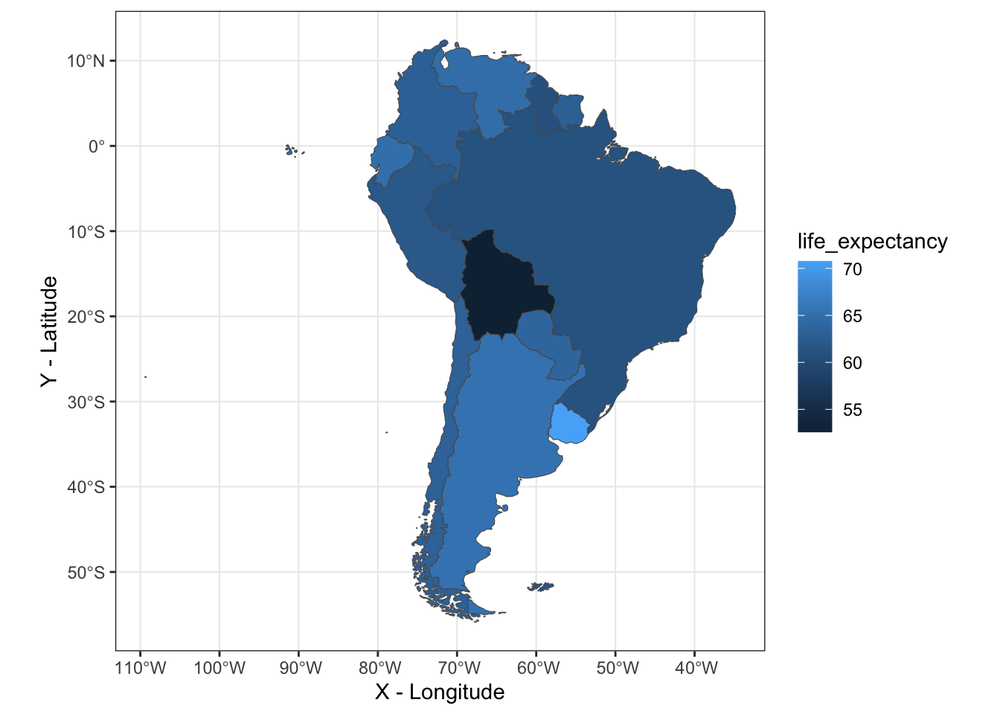
We are now ready to perform a t-test to see if the life expectancy in Latin America is different from life expectancy around the world. We should perform one more step: excluding Latin America from our world sample so that we are not comparing the Latin American sample to the world sample (which includes Latin America).
world_nolatam<-subset(merged, continent!="South America")
glimpse(world_nolatam)Rows: 228
Columns: 7
$ admin <chr> "Aruba", "Afghanistan", "Angola", "Anguilla", "Albania…
$ adm0_a3 <chr> "ABW", "AFG", "AGO", "AIA", "ALB", "ALD", "AND", "ARE"…
$ sovereignt <chr> "Netherlands", "Afghanistan", "Angola", "United Kingdo…
$ continent <chr> "North America", "Asia", "Africa", "North America", "E…
$ Entity <chr> "Aruba", "Afghanistan", "Angola", "Anguilla", "Albania…
$ life_expectancy <dbl> 70.25972, 45.38333, 45.08466, 69.44028, 68.28611, NA, …
$ geometry <MULTIPOLYGON [°]> MULTIPOLYGON (((-69.89912 1..., MULTIPOLY…Note that our sample got reduced from 241 (size of world sample including Latin America) to 228 (size of world sample excluding Latin America). Let us now perform a t-test.
t.test(sample_latam$life_expectancy,
mu=mean(world_nolatam$life_expectancy, na.rm=T),
sigma.x=sd(sample_latam$life_expectancy),
alternative = c("greater"))
One Sample t-test
data: sample_latam$life_expectancy
t = 0.9924, df = 12, p-value = 0.1703
alternative hypothesis: true mean is greater than 61.75155
95 percent confidence interval:
60.87175 Inf
sample estimates:
mean of x
62.8569 The result indicates that we do not reject the H0 because p is larger than 0.05, so the mean life expectancy for Latin America (as defined here), is not greater than that of the world. But is it less?
t.test(sample_latam$life_expectancy,
mu=mean(world_nolatam$life_expectancy, na.rm=T),
sigma.x=sd(sample_latam$life_expectancy),
alternative = c("less"))
One Sample t-test
data: sample_latam$life_expectancy
t = 0.9924, df = 12, p-value = 0.8297
alternative hypothesis: true mean is less than 61.75155
95 percent confidence interval:
-Inf 64.84205
sample estimates:
mean of x
62.8569 No, it does not seem to be the case. Is it equal to that of the world?
t.test(sample_latam$life_expectancy,
mu=mean(world_nolatam$life_expectancy, na.rm=T),
sigma.x=sd(sample_latam$life_expectancy),
alternative = c("two.sided"))
One Sample t-test
data: sample_latam$life_expectancy
t = 0.9924, df = 12, p-value = 0.3406
alternative hypothesis: true mean is not equal to 61.75155
95 percent confidence interval:
60.43009 65.28371
sample estimates:
mean of x
62.8569 Yes, statistically it is similar. This test prevents us from rejecting the H0 that the true mean is equal to 61.81599. Thus, the two means are equal.
Another good way to visualize the similarity between the two groups is by using a boxplot.
merged$sample<-NA
merged$sample<-"Rest of the World"
merged$sample[merged$continent=="South America"]<-"South America"ggplot(merged, aes(x = sample, y = life_expectancy, color = sample)) +
geom_boxplot() +
geom_jitter() +
theme_bw()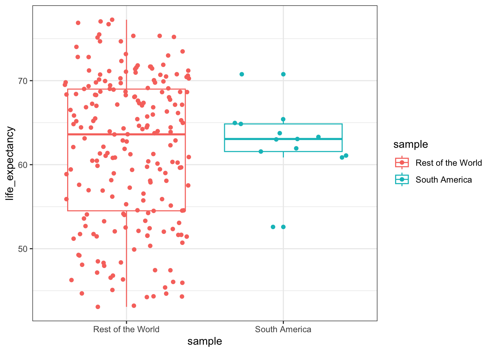
6 Mapping Life Expectancy in Europe
What if we wanted to examine life expectancy in Europe over time? The first step is to fix the coordinates and add limits to our graph. This time around we need to choose a maximum Y (North Point), minimum Y (South Point), a maximum X (West Point), and minimum X (East Point). One good way would be to take these coordinates from the existing countries. Let us choose four countries that would allow us to decide on the coordinates for Europe: Norway, Portugal, Ukraine, Greece.
norway<-subset(merged, Entity == "Norway")
nc_geom <- st_geometry(norway)
list_points_norway<-nc_geom[[1]]
list_points_norway<-flatten(list_points_norway)
list_points_norway2<-as.data.frame(do.call(rbind, list_points_norway))
names(list_points_norway2)<-c("lon_x", "lat_y")
head(list_points_norway2, n=10) lon_x lat_y
1 5.085840 60.30757
2 5.089063 60.18877
3 4.996973 60.19775
4 4.955566 60.24331
5 4.943555 60.27241
6 4.950781 60.34116
7 4.930078 60.41206
8 4.957227 60.44727
9 4.990625 60.45205
10 5.050195 60.38896For our map of Europe we are interested in the Northern most point in Norway. This will be our maximum Y.
max_lat_y<-max(list_points_norway2$lat_y)
max_lat_y[1] 80.47783Let us now get another country that is in the south: Greece.
greece<-subset(merged, Entity == "Greece")
nc_geom <- st_geometry(greece)
list_points_greece<-nc_geom[[1]]
list_points_greece<-flatten(list_points_greece)
list_points_greece2<-as.data.frame(do.call(rbind, list_points_greece))
names(list_points_greece2)<-c("lon_x", "lat_y")
head(list_points_greece2, n=10) lon_x lat_y
1 23.85225 35.53545
2 23.92061 35.52817
3 24.01328 35.52944
4 24.03438 35.53540
5 24.09336 35.59385
6 24.16602 35.59521
7 24.19775 35.53745
8 24.12402 35.51084
9 24.10898 35.49580
10 24.12314 35.48364For our map of Europe we are interested in the Southern most point in Greece This will be the minimum Y.
min_lat_y<-min(list_points_greece2$lat_y)
min_lat_y[1] 34.93447Let us now get a country in the East: Ukraine.
ukraine<-subset(merged, Entity == "Ukraine")
nc_geom <- st_geometry(ukraine)
list_points_ukraine<-nc_geom[[1]]
list_points_ukraine<-flatten(list_points_ukraine)
list_points_ukraine2<-as.data.frame(do.call(rbind, list_points_ukraine))
names(list_points_ukraine2)<-c("lon_x", "lat_y")
head(list_points_ukraine2, n=10) lon_x lat_y
1 32.01221 46.20391
2 32.15010 46.15469
3 32.00938 46.16782
4 31.70020 46.21406
5 31.56387 46.25776
6 31.52871 46.30659
7 31.50879 46.37314
8 31.58486 46.30317
9 31.63848 46.27256
10 32.01221 46.20391For our map of Europe we are interested in the Eastern most point in Ukraine This will be the maximum X.
max_lon_x<-max(list_points_ukraine2$lon_x)
max_lon_x[1] 40.12832Let’s choose now a country in the West: Portugal
portugal<-subset(merged, Entity == "Portugal")
nc_geom <- st_geometry(portugal)
list_points_portugal<-nc_geom[[1]]
list_points_portugal<-flatten(list_points_portugal)
list_points_portugal2<-as.data.frame(do.call(rbind, list_points_portugal))
names(list_points_portugal2)<-c("lon_x", "lat_y")
head(list_points_portugal2, n=10) lon_x lat_y
1 -17.19087 32.86860
2 -17.05449 32.81587
3 -16.92920 32.84141
4 -16.77397 32.77354
5 -16.69326 32.75801
6 -16.76528 32.70972
7 -16.83740 32.64829
8 -17.01826 32.66279
9 -17.17119 32.72188
10 -17.22603 32.76685For our map of Europe we are interested in the Western most point in Portugal. This will be the minimum X.
min_lon_x<-min(list_points_portugal2$lon_x)
min_lon_x[1] -31.28296We are now ready:
figure1<-ggplot() +
geom_sf() +
geom_sf(data = merged, aes(fill = life_expectancy))+
theme_bw()+
xlab("X - Longitude") + ylab("Y - Latitude")+
coord_sf(xlim = c(min_lon_x, max_lon_x), ylim = c(min_lat_y, max_lat_y), expand = FALSE)
ggsave(figure1, file = "./figure1.jpg",
height = 20, width = 20,
units = "cm", dpi = 300)
figure1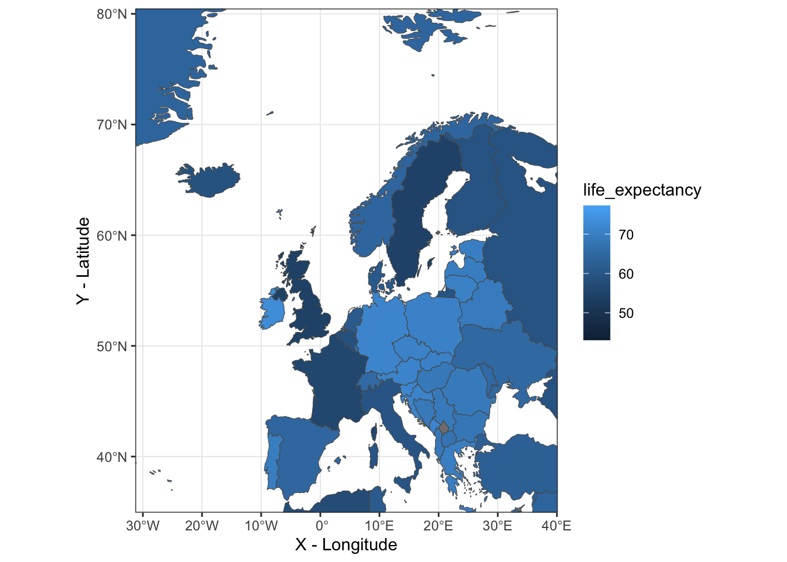
Let us also visualize the points that we calculated. But to make things easier, we should create a df.
euro_extreme<-data.frame(x_lon=c(min_lon_x, max_lon_x, min_lon_x, max_lon_x),
y_lat=c(min_lat_y, max_lat_y, max_lat_y, min_lat_y),
name = (c("South-West", "North-East", "North-West", "South-East")))
euro_extreme x_lon y_lat name
1 -31.28296 34.93447 South-West
2 40.12832 80.47783 North-East
3 -31.28296 80.47783 North-West
4 40.12832 34.93447 South-EastLet us visualize the four points that we calculated.
figure1<-ggplot() +
geom_sf() +
geom_sf(data = merged, aes(fill = life_expectancy))+
geom_point(data= euro_extreme, aes(x=x_lon,
y=y_lat),
fill="blue", color="darkred", size=3)+
geom_label_repel(data= euro_extreme, aes(x=x_lon, y=y_lat,
label = name), fill = alpha(c("white"),0.8))+
theme_bw()+
xlab("X - Longitude") + ylab("Y - Latitude")+
coord_sf(xlim = c(min_lon_x-3, max_lon_x+3), ylim = c(min_lat_y-3, max_lat_y+3), expand = FALSE)
figure1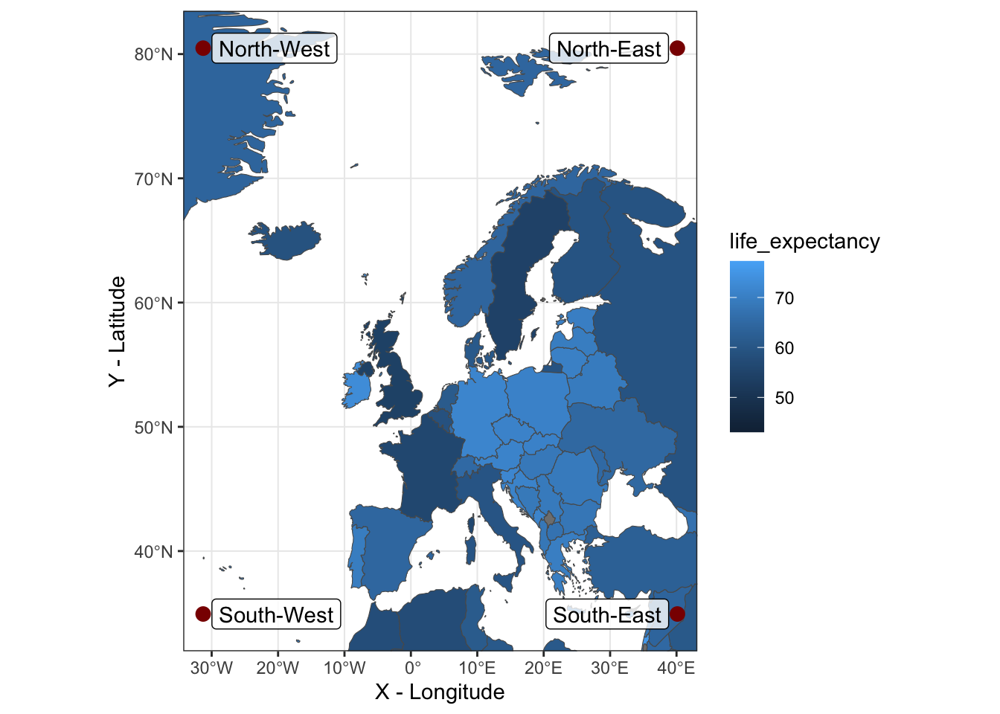
This looks pretty good. Next step is to redo the merge in our data. Remember that we calculated average life expectancy for the entire period: historical years up to the present day. Thus, we need to do a new merge in which we merge the spatial dataframe to the specific year on life expectancy.
#life_expectancy$Code
names(life_expectancy)[4]<-"life_expectancy_values"
life_expectancy_1950<-subset(life_expectancy, Year==1950)
world_1950<-left_join(world2, life_expectancy_1950, by = c("adm0_a3"="Code"))
glimpse(world_1950)Rows: 241
Columns: 8
$ admin <chr> "Aruba", "Afghanistan", "Angola", "Anguilla", "…
$ adm0_a3 <chr> "ABW", "AFG", "AGO", "AIA", "ALB", "ALD", "AND"…
$ sovereignt <chr> "Netherlands", "Afghanistan", "Angola", "United…
$ continent <chr> "North America", "Asia", "Africa", "North Ameri…
$ Entity <chr> "Aruba", "Afghanistan", "Angola", "Anguilla", "…
$ Year <int> 1950, 1950, 1950, 1950, 1950, NA, 1950, 1950, 1…
$ life_expectancy_values <dbl> 57.2, 27.7, 36.3, 55.3, 44.7, NA, 64.6, 41.1, 6…
$ geometry <MULTIPOLYGON [°]> MULTIPOLYGON (((-69.89912 1..., MU…What is we were interested in life expectancy in Europe in 1950.
Let us map life expectancy in 1950.
figure2<-ggplot() +
geom_sf(data = world_1950, aes(fill = life_expectancy_values))+
theme_bw()+
xlab("X - Longitude") + ylab("Y - Latitude")+
coord_sf(xlim = c(min_lon_x, max_lon_x), ylim = c(min_lat_y, max_lat_y), expand = FALSE)
figure2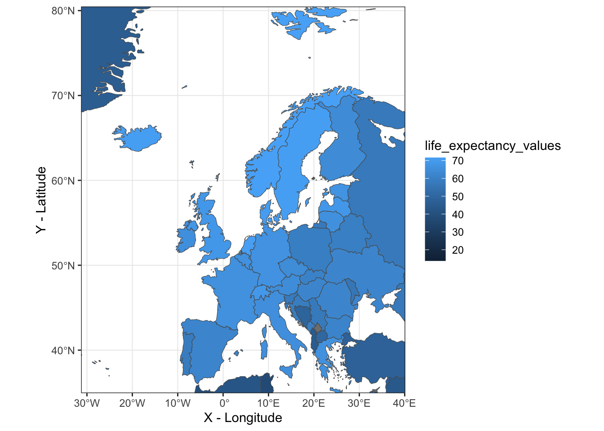
Let us map life expectancy in 2020.
life_expectancy_2020<-subset(life_expectancy, Year==2020)
world_2020<-left_join(world2, life_expectancy_2020, by = c("adm0_a3"="Code"))
glimpse(world_2020)Rows: 241
Columns: 8
$ admin <chr> "Aruba", "Afghanistan", "Angola", "Anguilla", "…
$ adm0_a3 <chr> "ABW", "AFG", "AGO", "AIA", "ALB", "ALD", "AND"…
$ sovereignt <chr> "Netherlands", "Afghanistan", "Angola", "United…
$ continent <chr> "North America", "Asia", "Africa", "North Ameri…
$ Entity <chr> "Aruba", "Afghanistan", "Angola", "Anguilla", "…
$ Year <int> 2020, 2020, 2020, 2020, 2020, NA, 2020, 2020, 2…
$ life_expectancy_values <dbl> 75.7, 62.6, 62.3, 76.9, 77.0, NA, 79.0, 78.9, 7…
$ geometry <MULTIPOLYGON [°]> MULTIPOLYGON (((-69.89912 1..., MU…figure3<-ggplot() +
geom_sf() +
geom_sf(data = world_2020, aes(fill = life_expectancy_values))+
theme_bw()+
xlab("X - Longitude") + ylab("Y - Latitude")+
coord_sf(xlim = c(min_lon_x, max_lon_x), ylim = c(min_lat_y, max_lat_y), expand = FALSE)
figure3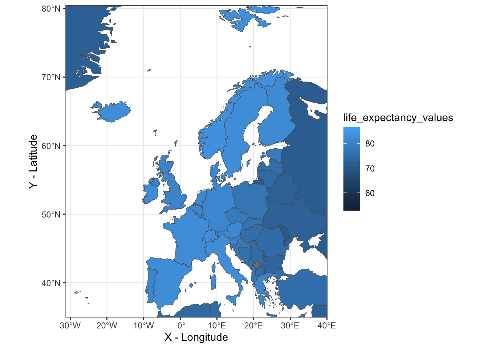
Let us put them side by side.
grid.arrange(figure2, figure3, ncol=2)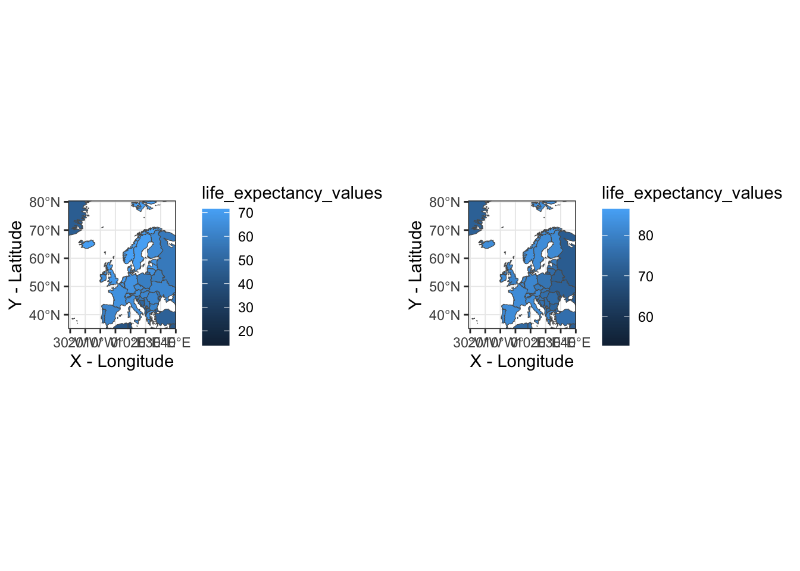
We don’t see much of a difference because we also need to fix the color scheme in a way that has the same minmum and maximum. This is how we do this:
vmax <- max(life_expectancy$life_expectancy_values, na.rm=T)
vmin <- min(life_expectancy$life_expectancy_values, na.rm=T)
vmax[1] 86.5vmin[1] 12Let us now replot the maps
library(ggpubr)
figure2<-ggplot() +
geom_sf() +
geom_sf(data = world_1950, aes(fill = life_expectancy_values))+
theme_bw()+
xlab("X - Longitude") + ylab("Y - Latitude")+
coord_sf(xlim = c(min_lon_x, max_lon_x), ylim = c(min_lat_y, max_lat_y), expand = FALSE)+
scale_fill_gradient(limits=c(vmin, vmax))
#theme(legend.position="none")
figure3<-ggplot() +
geom_sf() +
geom_sf(data = world_2020, aes(fill = life_expectancy_values))+
theme_bw()+
xlab("X - Longitude") + ylab("Y - Latitude")+
coord_sf(xlim = c(min_lon_x, max_lon_x), ylim = c(min_lat_y, max_lat_y), expand = FALSE)+
scale_fill_gradient(limits=c(vmin, vmax))
#theme(legend.position="none")
ggarrange(figure2, figure3, ncol=2, common.legend = TRUE)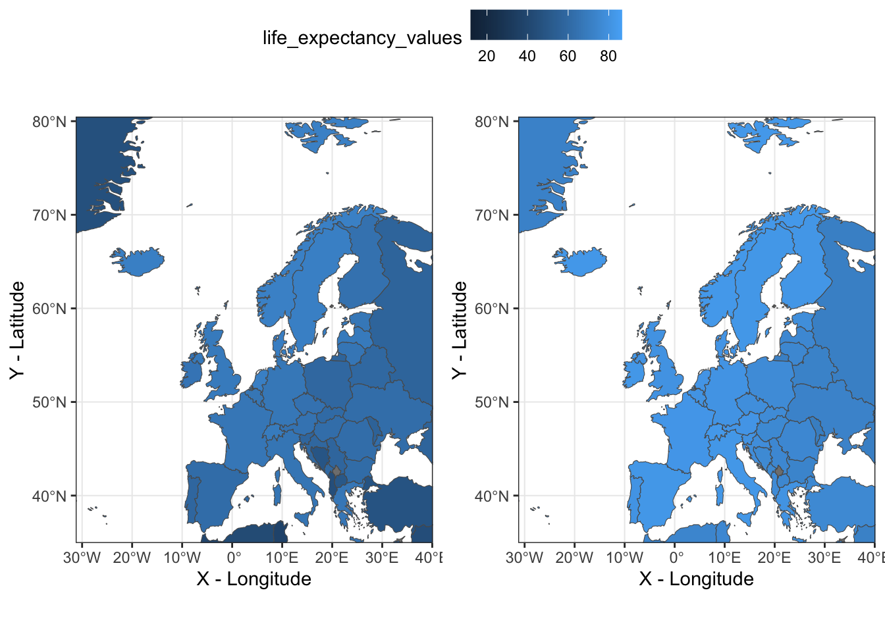
Now, the differences are more visible. What if were interested in plotting the change in life expectancy between 1950 and 2020?
life_expectancy_1950_2020<-subset(life_expectancy, Year %in% c(1950, 2020))
life_expectancy_1950_2020b<-life_expectancy_1950_2020%>%
group_by(Code) %>%
summarise(differ=life_expectancy_values - lag(life_expectancy_values))
life_expectancy_1950_2020c<-subset(life_expectancy_1950_2020b, Code!="" & !is.na(differ))
glimpse(life_expectancy_1950_2020c)Rows: 237
Columns: 2
Groups: Code [237]
$ Code <chr> "ABW", "AFG", "AGO", "AIA", "ALB", "AND", "ARE", "ARG", "ARM", …
$ differ <dbl> 18.5, 34.9, 26.0, 21.6, 32.3, 14.4, 37.8, 14.7, 12.9, 11.4, 21.…Let us now plot the change.
world_change<-left_join(world2, life_expectancy_1950_2020c, by = c("adm0_a3"="Code"))
glimpse(world_change)Rows: 241
Columns: 6
$ admin <chr> "Aruba", "Afghanistan", "Angola", "Anguilla", "Albania", "A…
$ adm0_a3 <chr> "ABW", "AFG", "AGO", "AIA", "ALB", "ALD", "AND", "ARE", "AR…
$ sovereignt <chr> "Netherlands", "Afghanistan", "Angola", "United Kingdom", "…
$ continent <chr> "North America", "Asia", "Africa", "North America", "Europe…
$ differ <dbl> 18.5, 34.9, 26.0, 21.6, 32.3, NA, 14.4, 37.8, 14.7, 12.9, 1…
$ geometry <MULTIPOLYGON [°]> MULTIPOLYGON (((-69.89912 1..., MULTIPOLYGON (…figure4<-ggplot() +
geom_sf() +
geom_sf(data = world_change, aes(fill = differ))+
theme_bw()+
xlab("X - Longitude") + ylab("Y - Latitude")+
coord_sf(xlim = c(min_lon_x, max_lon_x), ylim = c(min_lat_y, max_lat_y), expand = FALSE)+
scale_fill_gradient(limits=c(0, 35))
figure4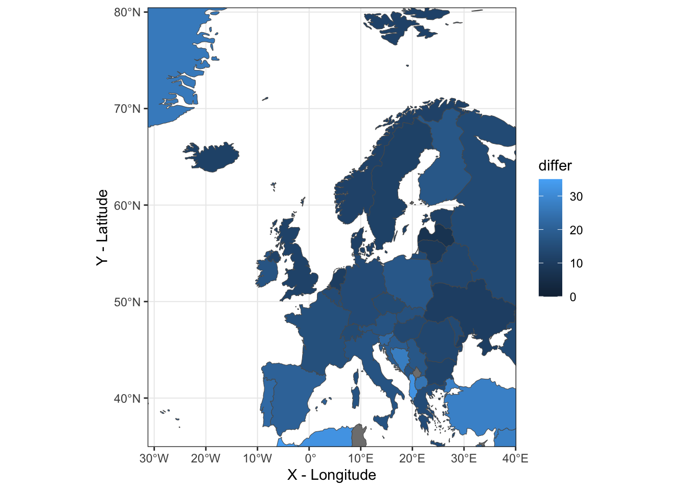
What is the country in Europe with the highest change in life expectancy between 1950 and 2020?
world_change_res<-subset(world_change, continent=="Europe")
world_change_resx<-subset(world_change_res, differ==max(world_change_res$differ, na.rm=T))
world_change_resx$admin[1] "Albania"What is the country in Europe with the lowest change in life expectancy between 1950 and 2020?
world_change_resx<-subset(world_change_res, differ==min(world_change_res$differ, na.rm=T))
world_change_resx$admin[1] "Latvia"7 Correlation between two Variables
Let us now calculate the correlation between urbanization and life expectancy.
names(urbanization)[4]<-"urbanization"urbanization2<-subset(urbanization, select=c(Code, urbanization, Year))merged<-left_join(life_expectancy, urbanization2, by = c("Code"="Code", "Year"="Year"))
merged<-na.omit(merged)What is the correlation in life expectancy and urbanization for the entire dataset?
cor(merged$life_expectancy_values, merged$urbanization)[1] 0.4579985